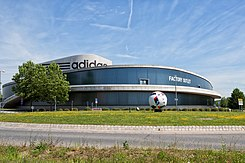
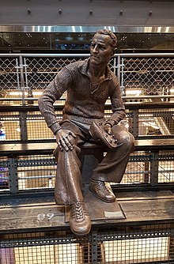

Adidas
Adidas AG (pronunciación en alemán: [adiˌdas] Acerca de este sonido (escuchar); estilizado adidas, con minúsculas, desde 1949) es una compañía multinacional alemana fundada en 1949 dedicada a la fabricación de equipamiento deportivo y productos de moda (bolsos, camisas, relojes, gafas, etc.). La empresa también es patrocinadora de eventos y figuras deportivas a nivel mundial. Es el primer mayor fabricante del rubro en el mundo.
Sus ingresos superan los 14 534 millones de dólares estadounidenses y cuenta en su nómina a un total de aproximadamente 60 000 empleados. La marca tiene un valor de 6 800 millones de dólares estadounidenses, lo que la convierte en la segunda marca más valiosa entre las corporaciones deportivas.

La empresa Adidas, fundada en enero de 1949, tiene sus orígenes en las empresas previas de la familia Dassler: la llamada «Gebrüder Dassler Schuhfabrik», fundada a principios de la década de 1920 en Alemania por Adolf Dassler junto con su hermano Rudolf Dassler. Confeccionaban zapatillas y pantuflas sin marca adquirida, y también calzado con clavos para deportistas. Adi era el artista introvertido y Rudi el encargado de relaciones públicas. Ambos lograron colocar sus productos en el equipo alemán de atletismo. Pero el golpe maestro fue fichar a Jesse Owens, el atleta que deslumbró en los Juegos Olímpicos de Berlín 1936. Ese año, Dassler persuadió al velocista estadounidense para usar sus clavos hechos a mano en los Juegos Olímpicos. Después de las cuatro medallas de oro de Owens, el nombre y la reputación de los zapatos Dassler se hicieron conocidos por los deportistas del mundo y sus entrenadores. Los negocios tuvieron éxito y los Dassler vendían 200 000 pares de zapatos cada año antes de la Segunda Guerra Mundial.
